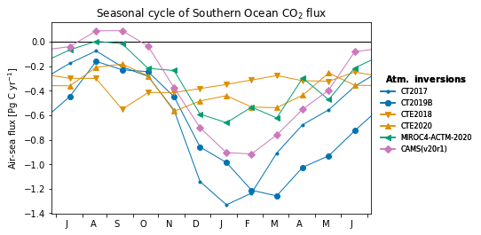
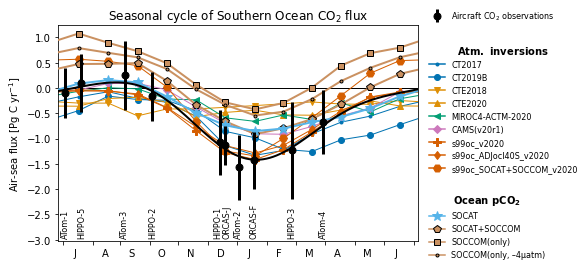

Estimate of Southern Ocean air-sea CO2 fluxes¶
%load_ext autoreload
%autoreload 2
The autoreload extension is already loaded. To reload it, use:
%reload_ext autoreload
from collections import OrderedDict
import numpy as np
import xarray as xr
import matplotlib.pyplot as plt
import matplotlib.gridspec as gridspec
from matplotlib.lines import Line2D
import emergent_constraint as ec
import figure_panels
import models
import obs_surface
import util
Load emergent constraint data¶
clobber = False
clobber_deep = False
air_parms = ec.get_parameters('default')
obj_srf = {}; obj_air = {};
acs = {}; scs = {};
for constraint_type in ['ocean_constraint', 'total_constraint',]:
model_input_lists = ec.get_model_tracer_lists(constraint_type)
obj_srf[constraint_type] = ec.whole_enchilada_srf(**model_input_lists)
obj_air[constraint_type] = ec.whole_enchilada(clobber=clobber_deep, **model_input_lists)
acs[constraint_type] = obj_air[constraint_type].get_ac(**air_parms, clobber=clobber)
scs[constraint_type] = obj_srf[constraint_type].get_sc(clobber=clobber)
constraint_type = 'ocean_constraint'
model_input_lists = ec.get_model_tracer_lists(constraint_type)
model_input_lists
{'model_tracer_list': [('CT2017', 'CO2_OCN'),
('CT2019B', 'CO2_OCN'),
('CTE2018', 'CO2_OCN'),
('CTE2020', 'CO2_OCN'),
('MIROC', 'CO2_OCN'),
('CAMSv20r1', 'CO2_OCN'),
('s99oc_v2020', 'CO2_OCN'),
('s99oc_ADJocI40S_v2020', 'CO2_OCN'),
('s99oc_SOCCOM_v2020', 'CO2_OCN'),
('TM5-Flux-m0f', 'CO2_OCN'),
('TM5-Flux-mmf', 'CO2_OCN'),
('TM5-Flux-mrf', 'CO2_OCN'),
('TM5-Flux-mwf', 'CO2_OCN')],
'model_tracer_ext_list': [('CT2017', 'CO2_LND+CO2_FFF'),
('CT2019B', 'CO2_LND+CO2_FFF'),
('CTE2018', 'CO2_LND+CO2_FFF'),
('CTE2020', 'CO2_LND+CO2_FFF'),
('CAMSv20r1', 'CO2_LND+CO2_FFF'),
('s99oc_v2020', 'CO2_LND+CO2_FFF'),
('s99oc_ADJocI40S_v2020', 'CO2_LND+CO2_FFF'),
('s99oc_SOCCOM_v2020', 'CO2_LND+CO2_FFF')],
'model_list_sfco2_lnd': []}
Flux estimates from other products¶
sfco2_ocn_inversions = []
for m, t in model_input_lists['model_tracer_list']:
if not any(s in m for s in ['TM5', 'CESM', 'prior']) and m not in sfco2_ocn_inversions:
sfco2_ocn_inversions.append(m)
sfco2_ocn_soccom = [
'TM5-Flux-m0f', 'TM5-Flux-mwf', 'TM5-Flux-mmf',
]
sfco2_ocn_pco2_clim = ['SOM-FFN',]
other = []
sfco2_ocn_model_list = sfco2_ocn_inversions + sfco2_ocn_pco2_clim + sfco2_ocn_soccom + other
sfco2_ocn_model_list
['CT2017',
'CT2019B',
'CTE2018',
'CTE2020',
'MIROC',
'CAMSv20r1',
's99oc_v2020',
's99oc_ADJocI40S_v2020',
's99oc_SOCCOM_v2020',
'SOM-FFN',
'TM5-Flux-m0f',
'TM5-Flux-mwf',
'TM5-Flux-mmf']
%%capture
dsets_sfco2_ocn = {}
for model in sfco2_ocn_model_list:
print(model)
# get obj
model_obj = models.Model(model)
if 'TM5' in model or model == 's99oc_SOCCOM_v2020':
time_slice = slice('2015', '2020')
else:
time_slice = slice('1999', '2020')
# get flux
print(model)
dsets_sfco2_ocn[model] = (model_obj
.open_derived_dataset(
'flux_ts_monthly',
lat_range=(-90., -45.))[['SFCO2_OCN']]
.sel(time=time_slice)
.compute()
)
dsets_sfco2_mon = {}
dsets_sfco2_mmm = {}
for model in sfco2_ocn_model_list:
if 'TM5' in model:
time_slice = slice('2015', '2020')
else:
time_slice = slice('2009', '2020')
dsets_sfco2_mon[model] = (dsets_sfco2_ocn[model]
.sel(time=time_slice)
.groupby('time.month').mean('time')
)
dsets_sfco2_mmm = ec.get_dset_fluxes_mmm(dsets_sfco2_ocn)
dsets_sfco2_ann = {}
for model in sfco2_ocn_model_list:
if 'TM5' in model:
time_slice = slice('2015', '2020')
else:
time_slice = slice('2009', '2018')
dsets_sfco2_ann[model] = dsets_sfco2_ocn[model].sel(time=time_slice).mean('time')
ac = acs['ocean_constraint']
sc = scs['ocean_constraint']
pentads = [
(2000, 2004),
(2005, 2009),
(2010, 2014),
(2015, 2019),
]
assert all(p in sc.periods for p in pentads)
Seasonal evolution of fluxes¶
fig = plt.figure()
ax = plt.subplot(1, 1, 1)
h = ec.flux_contraint_seasonal_cycle(ax, ac, dsets_sfco2_mon)
marker_spec = figure_panels.marker_spec_models()
sfco2_ocn_model_list = list(dsets_sfco2_mon.keys())
assert not ('TM5-Flux-mrf' in sfco2_ocn_model_list and 'SOM-FFN' in sfco2_ocn_model_list)
spec = {}
legend_elements_inv = []
legend_elements_pco2 = []
for model in sfco2_ocn_model_list:
field = 'CO2' if 'CO2' in marker_spec[model] else 'CO2_OCN'
spec = {k: v for k, v in marker_spec[model][field].items()}
spec['label'] = ec.flux_label(marker_spec[model][field]['label'])
if model in sfco2_ocn_inversions:
legend_elements_inv.append(Line2D([0], [0], **spec))
elif model in sfco2_ocn_pco2_clim or model in sfco2_ocn_soccom:
legend_elements_pco2.append(Line2D([0], [0], **spec))
from matplotlib.legend_handler import HandlerErrorbar
leg0 = ax.legend(handles=[h], labels=['Aircraft CO$_2$ observations'], ncol=1,
handler_map={type(h): HandlerErrorbar(xerr_size=0.8)},
handlelength=2,
fontsize=8, loc=(1.02, 0.975), frameon=False,)
leg1 = ax.legend(handles=legend_elements_inv, ncol=1,
fontsize=8, loc=(1.02, 0.22), frameon=False, title="$\\bf{Atm.\ inversions}$");
leg2 = ax.legend(handles=legend_elements_pco2, ncol=1,
fontsize=8, loc=(1.02, -0.15), frameon=False, title='$\\bf{Ocean\ pCO_2}$');
ax.add_artist(leg0)
ax.add_artist(leg1)
ax.set_title('Southern Ocean CO$_2$ flux');
Annual mean fluxes¶
marker_spec = figure_panels.marker_spec_models()
ds_inversion_full_period = xr.concat(
[dsets_sfco2_ann[m].SFCO2_OCN for m in sfco2_ocn_inversions],
dim='model',
)
ds_inversion_full_2015_2017 = xr.concat(
[dsets_sfco2_ocn[m].SFCO2_OCN.sel(time=slice('2015', '2017')).mean('time') for m in sfco2_ocn_inversions],
dim='model',
)
ds_soccom = xr.concat(
[dsets_sfco2_ann[m].SFCO2_OCN for m in sfco2_ocn_soccom],
dim='model',
)
sfco2_ann_estimates = [
('Aircraft\nconstraint\n~2009-18', ac.estimate_ann_mean_flux),
('Mean\nInversions\n2009-18', (ds_inversion_full_period.mean('model').values, ds_inversion_full_period.std('model').values)),
('Mean\nInversions\n2015-17', (ds_inversion_full_2015_2017.mean('model').values, ds_inversion_full_2015_2017.std('model').values)),
]
som_ffn_method_uncertainty = 0.15
y, _, _ = util.datetime64_parts(dsets_sfco2_ocn['SOM-FFN'].sel(time=slice('2009', '2018')).time)
label = f'SOCAT\n{y[0]}-{y[-1]-2000}'
sfco2_ann_estimates.append(
(label, (
dsets_sfco2_ocn['SOM-FFN'].SFCO2_OCN.sel(time=slice('2009', '2018')).mean('time').values,
som_ffn_method_uncertainty)
)
)
y, _, _ = util.datetime64_parts(dsets_sfco2_ocn['SOM-FFN'].sel(time=slice('2015', '2017')).time)
label = f'SOCAT\n{y[0]}-{y[-1]-2000}'
sfco2_ann_estimates.append(
(label, (
dsets_sfco2_ocn['SOM-FFN'].SFCO2_OCN.sel(time=slice('2015', '2017')).mean('time').values,
som_ffn_method_uncertainty)
)
)
y, _, _ = util.datetime64_parts(dsets_sfco2_ocn[sfco2_ocn_soccom[0]].time)
year_str = f'{y[0]}-{y[-1]-2000}'
for m in sfco2_ocn_soccom:
label = ec.flux_label(marker_spec[m]['CO2_OCN']['label'], linebreaks=True)
label = f'{label}\n{year_str}'
sfco2_ann_estimates.append(
(
label,
(dsets_sfco2_ocn[m].SFCO2_OCN.mean('time').values, som_ffn_method_uncertainty)
)
)
sfco2_ann_estimates = OrderedDict(sfco2_ann_estimates)
def ann_mean_flux(ax):
width = 0.9
x1 = np.arange(len(sfco2_ann_estimates.keys()))
y1 = [v[0] for v in sfco2_ann_estimates.values()]
yerr1 = [v[1] for v in sfco2_ann_estimates.values()]
labels = list(sfco2_ann_estimates.keys())
colors = []
for l in labels:
if 'Aircraft' in l:
colors.append('k')
elif 'Inversion' in l:
colors.append('w')
elif 'SOCCOM\n(only)' in l:
colors.append(marker_spec['TM5-Flux-mwf']['CO2_OCN']['color'])
elif '–4µatm' in l:
colors.append(marker_spec['TM5-Flux-mmf']['CO2_OCN']['color'])
elif 'SOCAT' in l and 'SOCCOM' in l:
colors.append(marker_spec['TM5-Flux-m0f']['CO2_OCN']['color'])
elif 'SOCAT' in l:
colors.append(marker_spec['SOM-FFN']['CO2_OCN']['color'])
else:
raise ValueError(f'unknown label: {l}')
for x, y, yerr, c in zip(x1, y1, yerr1, colors):
ax.bar(x,
y,
yerr=yerr,
width=width,
color=c,
edgecolor='k',
error_kw=dict(ecolor='tab:gray')
)
ax.axhline(0., lw=1., color='k')
ax.xaxis.set_label_position('top')
ax.set_xticks(x1)
ax.set_xticklabels(labels, fontsize=8)
#ax.xaxis.tick_top()
ax.set_ylabel('Air-sea flux [Pg C yr$^{-1}$]');
ax.set_title('Annual mean Southern Ocean air-sea CO$_2$ flux')
ylm = ax.get_ylim()
ax.set_xlim((0-width/2-width*0.05, 7+width/2+width*0.05))
fig = plt.figure() #figsize=(12, 4))
ax = plt.subplot(1, 1, 1)
ann_mean_flux(ax)
util.savefig(f'fluxes-annual-mean.pdf')
for key, value in sfco2_ann_estimates.items():
key_ = key.replace('\n', ' ')
print(f"{key_}:\t{value[0]:0.2f} ± {value[1]:0.2f}")
Aircraft constraint ~2009-18: -0.53 ± 0.23
Mean Inversions 2009-18: -0.45 ± 0.17
Mean Inversions 2015-17: -0.41 ± 0.17
SOCAT 2009-17: -0.38 ± 0.15
SOCAT 2015-17: -0.34 ± 0.15
SOCAT+ SOCCOM 2015-17: -0.15 ± 0.15
SOCCOM (only) 2015-17: 0.35 ± 0.15
SOCCOM (only,–4µatm) 2015-17: 0.17 ± 0.15
Fig 4: Flux estimates¶
fig = plt.figure(figsize=(5, 3)) #dpi=300)
# set up plot grid
gs = gridspec.GridSpec(
nrows=1, ncols=1,
left=0, right=1,
bottom=0., top=1,
hspace=0.25, wspace=0.15,
)
axs = [
plt.subplot(gs[0, 0]),
]
h = ec.flux_contraint_seasonal_cycle(axs[0], ac, dsets_sfco2_mon, inversions_only=True)
axs[0].set_title('Seasonal cycle of Southern Ocean CO$_2$ flux')
marker_spec = figure_panels.marker_spec_models()
sfco2_ocn_model_list = list(dsets_sfco2_mon.keys())
if 'TM5-Flux-mrf' in sfco2_ocn_model_list and 'SOM-FFN' in sfco2_ocn_model_list:
sfco2_ocn_model_list.remove('TM5-Flux-mrf')
spec = {}
legend_elements_inv = []
legend_elements_pco2 = []
for model in sfco2_ocn_model_list:
field = 'CO2' if 'CO2' in marker_spec[model] else 'CO2_OCN'
spec = {k: v for k, v in marker_spec[model][field].items()}
spec['label'] = ec.flux_label(marker_spec[model][field]['label'])
if model in sfco2_ocn_inversions:
if 's99oc' in model:
continue
legend_elements_inv.append(Line2D([0], [0], **spec))
elif model in sfco2_ocn_pco2_clim or model in sfco2_ocn_soccom:
legend_elements_pco2.append(Line2D([0], [0], **spec))
from matplotlib.legend_handler import HandlerErrorbar
# leg0 = axs[0].legend(handles=[h], labels=['Aircraft CO$_2$ observations'], ncol=1,
# handler_map={type(h): HandlerErrorbar(xerr_size=0.8)},
# handlelength=2,
# fontsize=8, loc=(1.02, 1), frameon=False,)
leg1 = axs[0].legend(handles=legend_elements_inv, ncol=1,
fontsize=8, loc=(1.02, 0.3), frameon=False, title="$\\bf{Atm.\ inversions}$");
#leg2 = axs[0].legend(handles=legend_elements_pco2, ncol=1,
# fontsize=8, loc=(1.02, -0.1), frameon=False, title='$\\bf{Ocean\ pCO_2}$');
#axs[0].add_artist(leg0)
axs[0].add_artist(leg1)
util.savefig(f'fluxes-seasonsal-cycle-inversions.pdf')

fig = plt.figure(figsize=(5, 3)) #dpi=300)
# set up plot grid
gs = gridspec.GridSpec(
nrows=1, ncols=1,
left=0, right=1,
bottom=0., top=1,
hspace=0.25, wspace=0.15,
)
axs = [
plt.subplot(gs[0, 0]),
]
h = ec.flux_contraint_seasonal_cycle(axs[0], ac, dsets_sfco2_mon, not_aircraft=True, not_soccom=True)
axs[0].set_title('Seasonal cycle of Southern Ocean CO$_2$ flux')
marker_spec = figure_panels.marker_spec_models()
sfco2_ocn_model_list = list(dsets_sfco2_mon.keys())
if 'TM5-Flux-mrf' in sfco2_ocn_model_list and 'SOM-FFN' in sfco2_ocn_model_list:
sfco2_ocn_model_list.remove('TM5-Flux-mrf')
spec = {}
legend_elements_inv = []
legend_elements_pco2 = []
for model in sfco2_ocn_model_list:
field = 'CO2' if 'CO2' in marker_spec[model] else 'CO2_OCN'
spec = {k: v for k, v in marker_spec[model][field].items()}
spec['label'] = ec.flux_label(marker_spec[model][field]['label'])
if model in sfco2_ocn_inversions:
if 'SOCCOM' in model:
continue
legend_elements_inv.append(Line2D([0], [0], **spec))
elif model in sfco2_ocn_pco2_clim or model in sfco2_ocn_soccom:
if 'TM5' in model:
continue
legend_elements_pco2.append(Line2D([0], [0], **spec))
from matplotlib.legend_handler import HandlerErrorbar
# leg0 = axs[0].legend(handles=[h], labels=['Aircraft CO$_2$ observations'], ncol=1,
# handler_map={type(h): HandlerErrorbar(xerr_size=0.8)},
# handlelength=2,
# fontsize=8, loc=(1.02, 1), frameon=False,)
leg1 = axs[0].legend(handles=legend_elements_inv, ncol=1,
fontsize=8, loc=(1.02, 0.3), frameon=False, title="$\\bf{Atm.\ inversions}$");
leg2 = axs[0].legend(handles=legend_elements_pco2, ncol=1,
fontsize=8, loc=(1.02, 0.1), frameon=False, title='$\\bf{Ocean\ pCO_2}$');
#axs[0].add_artist(leg0)
axs[0].add_artist(leg1)
util.savefig(f'fluxes-seasonsal-cycle-inversions+pco2.pdf')
fig = plt.figure(figsize=(5, 3)) #dpi=300)
# set up plot grid
gs = gridspec.GridSpec(
nrows=1, ncols=1,
left=0, right=1,
bottom=0., top=1,
hspace=0.25, wspace=0.15,
)
axs = [
plt.subplot(gs[0, 0]),
]
h = ec.flux_contraint_seasonal_cycle(axs[0], ac, dsets_sfco2_mon, not_aircraft=True,)
axs[0].set_title('Seasonal cycle of Southern Ocean CO$_2$ flux')
marker_spec = figure_panels.marker_spec_models()
sfco2_ocn_model_list = list(dsets_sfco2_mon.keys())
if 'TM5-Flux-mrf' in sfco2_ocn_model_list and 'SOM-FFN' in sfco2_ocn_model_list:
sfco2_ocn_model_list.remove('TM5-Flux-mrf')
spec = {}
legend_elements_inv = []
legend_elements_pco2 = []
for model in sfco2_ocn_model_list:
field = 'CO2' if 'CO2' in marker_spec[model] else 'CO2_OCN'
spec = {k: v for k, v in marker_spec[model][field].items()}
spec['label'] = ec.flux_label(marker_spec[model][field]['label'])
if model in sfco2_ocn_inversions:
legend_elements_inv.append(Line2D([0], [0], **spec))
elif model in sfco2_ocn_pco2_clim or model in sfco2_ocn_soccom:
legend_elements_pco2.append(Line2D([0], [0], **spec))
from matplotlib.legend_handler import HandlerErrorbar
# leg0 = axs[0].legend(handles=[h], labels=['Aircraft CO$_2$ observations'], ncol=1,
# handler_map={type(h): HandlerErrorbar(xerr_size=0.8)},
# handlelength=2,
# fontsize=8, loc=(1.02, 1), frameon=False,)
leg1 = axs[0].legend(handles=legend_elements_inv, ncol=1,
fontsize=8, loc=(1.02, 0.3), frameon=False, title="$\\bf{Atm.\ inversions}$");
leg2 = axs[0].legend(handles=legend_elements_pco2, ncol=1,
fontsize=8, loc=(1.02, -0.1), frameon=False, title='$\\bf{Ocean\ pCO_2}$');
#axs[0].add_artist(leg0)
axs[0].add_artist(leg1)
util.savefig(f'fluxes-seasonsal-cycle-inversions+pco2+soccom.pdf')
fig = plt.figure(figsize=(5, 3)) #dpi=300)
# set up plot grid
gs = gridspec.GridSpec(
nrows=1, ncols=1,
left=0, right=1,
bottom=0., top=1,
hspace=0.25, wspace=0.15,
)
axs = [
plt.subplot(gs[0, 0]),
]
h = ec.flux_contraint_seasonal_cycle(axs[0], ac, dsets_sfco2_mon)
axs[0].set_title('Seasonal cycle of Southern Ocean CO$_2$ flux')
marker_spec = figure_panels.marker_spec_models()
sfco2_ocn_model_list = list(dsets_sfco2_mon.keys())
if 'TM5-Flux-mrf' in sfco2_ocn_model_list and 'SOM-FFN' in sfco2_ocn_model_list:
sfco2_ocn_model_list.remove('TM5-Flux-mrf')
spec = {}
legend_elements_inv = []
legend_elements_pco2 = []
for model in sfco2_ocn_model_list:
field = 'CO2' if 'CO2' in marker_spec[model] else 'CO2_OCN'
spec = {k: v for k, v in marker_spec[model][field].items()}
spec['label'] = ec.flux_label(marker_spec[model][field]['label'])
if model in sfco2_ocn_inversions:
legend_elements_inv.append(Line2D([0], [0], **spec))
elif model in sfco2_ocn_pco2_clim or model in sfco2_ocn_soccom:
legend_elements_pco2.append(Line2D([0], [0], **spec))
from matplotlib.legend_handler import HandlerErrorbar
leg0 = axs[0].legend(handles=[h], labels=['Aircraft CO$_2$ observations'], ncol=1,
handler_map={type(h): HandlerErrorbar(xerr_size=0.8)},
handlelength=2,
fontsize=8, loc=(1.02, 1), frameon=False,)
leg1 = axs[0].legend(handles=legend_elements_inv, ncol=1,
fontsize=8, loc=(1.02, 0.3), frameon=False, title="$\\bf{Atm.\ inversions}$");
leg2 = axs[0].legend(handles=legend_elements_pco2, ncol=1,
fontsize=8, loc=(1.02, -0.1), frameon=False, title='$\\bf{Ocean\ pCO_2}$');
axs[0].add_artist(leg0)
axs[0].add_artist(leg1)
util.savefig(f'fluxes-seasonsal-cycle-all.pdf')

fig = plt.figure(figsize=(5, 6)) #dpi=300)
# set up plot grid
gs = gridspec.GridSpec(
nrows=2, ncols=1,
left=0, right=1,
bottom=0., top=1,
hspace=0.25, wspace=0.15,
)
axs = [
plt.subplot(gs[0, 0]),
plt.subplot(gs[1, 0]),
]
ann_mean_flux(axs[1])
h = ec.flux_contraint_seasonal_cycle(axs[0], ac, dsets_sfco2_mon)
axs[0].set_title('Seasonal cycle of Southern Ocean CO$_2$ flux')
#l, b, w, h = axs[0].get_position().bounds
#axs[0].set_position([l, b-0.1, w, h])
#axs[0].legend(loc=(1.02, -1), ncol=1, frameon=False)
#axs[0].legend(loc=(1.02, 0), ncol=1, frameon=False)
marker_spec = figure_panels.marker_spec_models()
sfco2_ocn_model_list = list(dsets_sfco2_mon.keys())
if 'TM5-Flux-mrf' in sfco2_ocn_model_list and 'SOM-FFN' in sfco2_ocn_model_list:
sfco2_ocn_model_list.remove('TM5-Flux-mrf')
spec = {}
legend_elements_inv = []
legend_elements_pco2 = []
for model in sfco2_ocn_model_list:
field = 'CO2' if 'CO2' in marker_spec[model] else 'CO2_OCN'
spec = {k: v for k, v in marker_spec[model][field].items()}
spec['label'] = ec.flux_label(marker_spec[model][field]['label'])
if model in sfco2_ocn_inversions:
legend_elements_inv.append(Line2D([0], [0], **spec))
elif model in sfco2_ocn_pco2_clim or model in sfco2_ocn_soccom:
legend_elements_pco2.append(Line2D([0], [0], **spec))
from matplotlib.legend_handler import HandlerErrorbar
leg0 = axs[0].legend(handles=[h], labels=['Aircraft CO$_2$ observations'], ncol=1,
handler_map={type(h): HandlerErrorbar(xerr_size=0.8)},
handlelength=2,
fontsize=8, loc=(1.02, 1), frameon=False,)
leg1 = axs[0].legend(handles=legend_elements_inv, ncol=1,
fontsize=8, loc=(1.02, 0.3), frameon=False, title="$\\bf{Atm.\ inversions}$");
leg2 = axs[0].legend(handles=legend_elements_pco2, ncol=1,
fontsize=8, loc=(1.02, -0.1), frameon=False, title='$\\bf{Ocean\ pCO_2}$');
axs[0].add_artist(leg0)
axs[0].add_artist(leg1)
util.label_plots(fig, axs)
util.savefig(f'fluxes-{constraint_type}.pdf')
flux, flux_err = ac.estimate_ann_mean_flux
print(
f"Annual mean flux estimate: {flux:0.2f}±{flux_err:0.2f}"
)
Annual mean flux estimate: -0.53±0.23
flux, flux_err = acs["total_constraint"].estimate_ann_mean_flux
print(
f"Annual mean flux estimate (total constraint): {flux:0.2f}±{flux_err:0.2f}"
)
Annual mean flux estimate (total constraint): -0.43±0.20
da_srf = (
obs_surface.open_surface_co2_data('obs', 'CO2')
)
da_srf_a = da_srf - da_srf.sel(record=['SPO_NOAA_insitu_CO2']).mean('record')
ds_djf = util.ann_mean(da_srf_a.to_dataset(), season='DJF', time_bnds_varname=None)
ds_jja = util.ann_mean(da_srf_a.to_dataset(), season='JJA', time_bnds_varname=None)
fig = plt.figure(figsize=(10, 6)) #dpi=300)
# set up plot grid
gs = gridspec.GridSpec(
nrows=2, ncols=2,
left=0, right=1,
bottom=0., top=1,
hspace=0.25, wspace=0.25,
)
axs = [
plt.subplot(gs[0, 0]),
plt.subplot(gs[1, 0]),
plt.subplot(gs[0, 1]),
plt.subplot(gs[1, 1]),
]
figure_panels.obs_srf_trends_djf_jja([axs[0], axs[2]],
ds_djf.CO2.groupby('stncode').mean('record').sel(stncode=obs_surface.southern_ocean_stn_list),
ds_jja.CO2.groupby('stncode').mean('record').sel(stncode=obs_surface.southern_ocean_stn_list),
)
ndx = [(sc.period_str(p), 'DJF') for p in pentads]
ec.flux_contraint_djf_timeseries(axs[1], dsets_sfco2_mmm, ac, sc.surface_flux.loc[ndx])
axs[1].set_title('DJF Southern Ocean CO$_2$ flux')
#axs[2].set_ylabel('')
spec = {}
legend_elements_inv = []
legend_elements_pco2 = []
for model in sfco2_ocn_model_list:
field = 'CO2' if 'CO2' in marker_spec[model] else 'CO2_OCN'
spec = {k: v for k, v in marker_spec[model][field].items()}
spec['label'] = ec.flux_label(marker_spec[model][field]['label'])
if model in sfco2_ocn_inversions:
legend_elements_inv.append(Line2D([0], [0], **spec))
elif model in sfco2_ocn_pco2_clim or model in sfco2_ocn_soccom:
legend_elements_pco2.append(Line2D([0], [0], **spec))
leg1 = axs[1].legend(handles=legend_elements_inv, ncol=2,
fontsize=8, loc=(0.4, -0.65), frameon=False, title="$\\bf{Atm.\ inversions}$");
leg2 = axs[1].legend(handles=legend_elements_pco2, ncol=1,
fontsize=8, loc=(1.4, -0.6), frameon=False, title='$\\bf{Ocean\ pCO_2}$');
axs[1].add_artist(leg1)
#axs[2].legend(loc=(0., -2.1), ncol=2, frameon=False)
ec.flux_contraint_jja_timeseries(axs[3], dsets_sfco2_mmm, ac)
axs[3].set_title('JJA Southern Ocean CO$_2$ flux')
#axs[3].set_ylabel('')
for ax in axs:
ax.set_xticks(np.arange(1998, 2022, 2));
ticklabels = np.arange(1998, 2022, 2).astype(str)
ticklabels[::2] = ''
ax.set_xticklabels(ticklabels)
ax.set_xlim([1998, 2021])
util.label_plots(fig, [axs[i] for i in [0, 2, 1, 3]])
util.savefig(f'flux-timeseries-{constraint_type}.pdf')
/glade/work/mclong/miniconda3/envs/so-co2/lib/python3.7/site-packages/numpy/core/_asarray.py:102: VisibleDeprecationWarning: Creating an ndarray from ragged nested sequences (which is a list-or-tuple of lists-or-tuples-or ndarrays with different lengths or shapes) is deprecated. If you meant to do this, you must specify 'dtype=object' when creating the ndarray.
return array(a, dtype, copy=False, order=order)
/glade/work/mclong/miniconda3/envs/so-co2/lib/python3.7/site-packages/numpy/core/_asarray.py:102: VisibleDeprecationWarning: Creating an ndarray from ragged nested sequences (which is a list-or-tuple of lists-or-tuples-or ndarrays with different lengths or shapes) is deprecated. If you meant to do this, you must specify 'dtype=object' when creating the ndarray.
return array(a, dtype, copy=False, order=order)
/glade/work/mclong/miniconda3/envs/so-co2/lib/python3.7/site-packages/numpy/core/_asarray.py:102: VisibleDeprecationWarning: Creating an ndarray from ragged nested sequences (which is a list-or-tuple of lists-or-tuples-or ndarrays with different lengths or shapes) is deprecated. If you meant to do this, you must specify 'dtype=object' when creating the ndarray.
return array(a, dtype, copy=False, order=order)
Surface flux estimates¶
Report the flux estimates for DJF based on surface observations.
periods = ["2005-2009", "2010-2014", "2015-2019"]
df_srf_flux = sc.surface_flux[["flux", "flux_error"]].xs("DJF", level="season").loc[periods]
for period, rowdata in df_srf_flux.iterrows():
print(f"{period}: {rowdata['flux']:0.1f}±{rowdata['flux_error']:0.1f} Pg C/yr")
2005-2009: -0.5±0.7 Pg C/yr
2010-2014: -1.1±0.9 Pg C/yr
2015-2019: -1.3±1.1 Pg C/yr